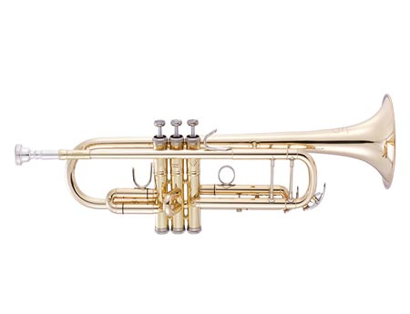

- Description
At an attractive rental price, this performance grade Bb trumpet is ready for use in any concert upon receiving. The John Packer 251SW has been carefully designed in collaboration with Dr Richard Smith of Smith-Watkins to ensure the instrument benefits from the same attention to detail as Smith-Watkins instruments. Other than being performacne grade, the JP251SW is also made for students that are taking their mid to late grade exams, due to its professional status and label.
- Specifications
Name: John Packer 251SW Key: Bb Finishing: Laquer Bell Size: 4.84 in Bore Size: 0.459 in Mouthpiece: 7C / 5C Pricing: RM250 per month - Pricing Explanation
Due to it being a professional or performance grade trumpet, the rental price is more or less justified, sitting at RM250. It is advised the trumpet be rented a few months before a performance or exam for the player to get used to the JP251SW. It is not advised for normal students to rent, however, as the pricing might be too high. The base price of the JP251SW is around RM3500.
- Disclaimer
When in possession of the instrument, the user holds full responsibility for what happens to the instrument. If the instrument rented is in anyway damaged, the customer will have to replace said instrument for the rental service. Late returners of the instrument would be issued a warning in a week, and will be subjegated to a RM150 late fee. For every subsequent week, another RM150 would be added.